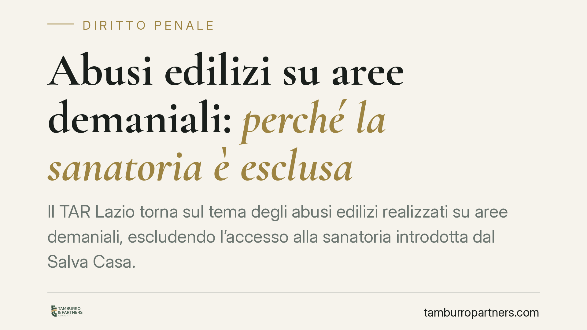

Abusi edilizi su aree demaniali: perché la sanatoria è esclusa
Il TAR Lazio torna sul tema degli abusi edilizi realizzati su aree demaniali, escludendo l'accesso alla sanatoria introdotta dal "Salva Casa". Per i concessionari di stabilimenti balneari la pronuncia conferma un principio netto: sul demanio marittimo le opere abusive restano insanabili e la demolizione è l'esito vincolato. Un quadro che impone prudenza e verifiche puntuali sulla posizione delle strutture esistenti.

Il caso
La controversia nasce dall'ordine di demolizione adottato da Roma Capitale nei confronti di una società concessionaria di uno stabilimento balneare, per opere realizzate su suolo demaniale senza titolo. La società impugna il provvedimento sostenendo di poter accedere alla sanatoria. Il TAR Lazio, Sez. II-bis, respinge il ricorso.
*Nota redazionale: gli estremi puntuali della sentenza (numero di deposito, data e numero di ruolo) sono in corso di verifica presso la banca dati della giustizia amministrativa. Riportiamo quindi i principi affermati senza citare un numero non ancora confermato, per non diffondere un dato non verificabile.*
Inquadramento normativo
Il nodo è l'intreccio tra due norme del D.P.R. 380/2001 (Testo Unico Edilizia).
L'art. 35 TUE disciplina gli interventi abusivi realizzati su suoli di proprietà dello Stato o di enti pubblici. La norma prevede che l'autorità competente ordini la demolizione e il ripristino dello stato dei luoghi: si tratta di un atto a contenuto vincolato, non discrezionale, proprio in ragione della natura pubblica dell'area incisa.
L'art. 36-bis TUE è stato introdotto dal D.L. 69/2024 (c.d. "Salva Casa"), convertito con L. 105/2024. La disposizione ha ampliato le possibilità di regolarizzazione delle difformità, attenuando in alcuni casi il requisito della "doppia conformità" (cioè la conformità dell'opera alla disciplina urbanistica sia al momento della realizzazione sia a quello della domanda). Il punto decisivo è che questo regime presuppone comunque un'area su cui l'intervento potesse, in astratto, essere assentito.
Sul demanio marittimo questa premessa manca. L'area è inedificabile per vincolo e destinata a uso pubblico: l'opera non è sanabile perché non sarebbe mai stata assentibile, a prescindere dall'alleggerimento procedurale introdotto dal "Salva Casa". Da qui l'insanabilità amministrativa e il carattere vincolato della demolizione.
Una precisazione sul profilo procedurale, per evitare equivoci diffusi: l'istanza di accertamento di conformità ex artt. 36 e 36-bis TUE non è soggetta a un termine perentorio tipico. Secondo l'orientamento prevalente è proponibile fino all'irrogazione delle sanzioni o all'esecuzione della demolizione. Il problema, sul demanio, non è dunque un termine scaduto, ma l'assenza a monte dei presupposti sostanziali per sanare.
Implicazioni pratiche
Per il concessionario di uno stabilimento balneare il messaggio è concreto.
La concessione demaniale legittima l'uso dell'area, non l'edificazione libera al suo interno. Ogni manufatto va assentito con il titolo edilizio richiesto e nei limiti del titolo concessorio. Le strutture realizzate in difformità o in assenza di titolo restano esposte all'ordine di demolizione, senza che il "Salva Casa" offra una via d'uscita.
Non rileva il tempo trascorso né la stabilità dell'esercizio commerciale: l'abuso su area demaniale non si consolida per decorso del tempo.
Cosa fare in concreto
- Verificate la titolarità edilizia di ogni manufatto presente nell'area in concessione, distinguendo ciò che è coperto da titolo da ciò che è stato aggiunto nel tempo.
- Ricostruite la storia concessoria e autorizzatoria, recuperando atti, planimetrie assentite e eventuali precedenti provvedimenti sanzionatori.
- Non presentate istanze di sanatoria "al buio": su area demaniale una domanda infondata può cristallizzare la posizione di abuso senza alcun beneficio.
- Impugnate nei termini l'eventuale ordine di demolizione, valutando con un professionista i margini difensivi effettivi, senza affidarvi all'automatismo della sanatoria.
- Attivate un confronto con l'ente concedente per le opere ancora regolarizzabili sul piano del titolo, dove esistano i presupposti.
Il profilo penale
L'insanabilità amministrativa non esaurisce le conseguenze. L'esecuzione di opere senza titolo integra le fattispecie contravvenzionali previste dall'art. 44 D.P.R. 380/2001, che punisce, con diversa gravità, l'inosservanza delle norme edilizie, l'esecuzione in totale difformità o assenza di permesso e la lottizzazione abusiva.
Qui emerge una distinzione importante: il procedimento penale è autonomo rispetto a quello amministrativo. Un'eventuale regolarizzazione, dove possibile, può incidere sul piano penale secondo i meccanismi di legge, ma l'impossibilità di sanare sul demanio lascia aperto il profilo contravvenzionale. Per il concessionario significa che l'abuso può generare, in parallelo, demolizione e responsabilità penale.
Consigliamo quindi di trattare la verifica edilizia e quella penale come due piani distinti ma connessi, da affrontare in modo coordinato.
---
Contributo informativo a cura di Tamburro & Partners - Avv. Giuseppe Tamburro. Non costituisce parere legale.
Ogni condominio ha una storia a sé.
Se gestisci un'amministrazione e vuoi un confronto su una specifica questione condominiale, scrivi allo studio. Ti rispondiamo entro un giorno lavorativo.